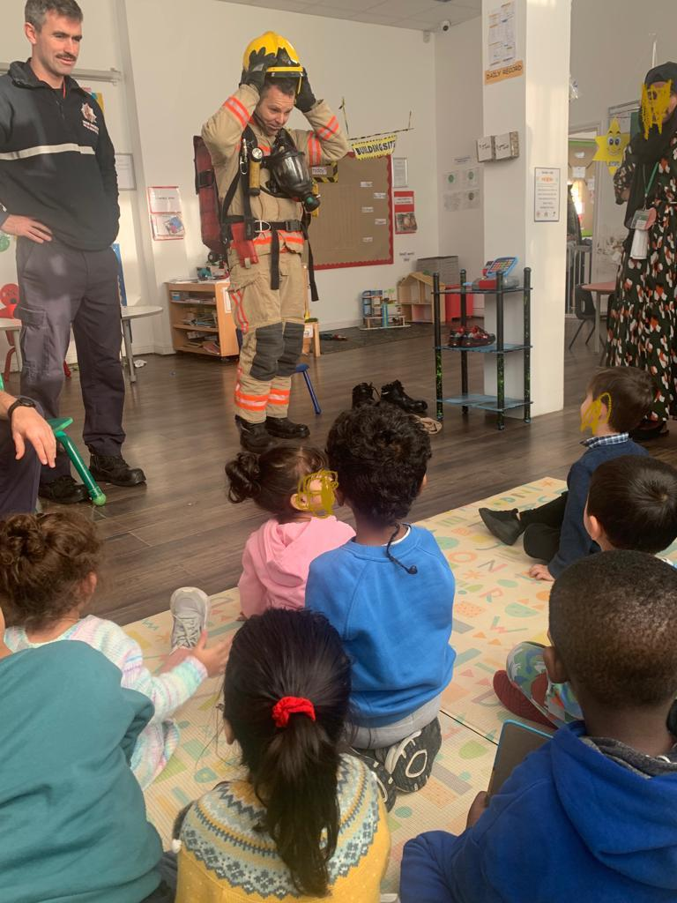

If you have ever wondered what a day at Lemon Tree Preschool looks like, you are not alone. Many parents want to picture the small moments, not just the timetable. This guide walks you through a real day at Lemon Tree Preschool Manchester, showing how routine, care, and learning come together naturally for young children. For more about the nursery’s philosophy, check their About Us.
From the moment children arrive to the calm goodbye at home time, the daily life at Lemon Tree Preschool is designed to feel predictable, welcoming, and genuinely child-focused. Let’s step inside the experience and see how their daily routine unfolds.
A Warm Welcome: Starting the Day at Lemon Tree Preschool
The day begins gently. Staff greet children by name, crouch to their level, and make eye contact. This simple moment matters. It sets the tone for the entire preschool daily routine and helps children separate from parents with confidence rather than tears.
Settling in is never rushed. Some children head straight to play, while others need a quiet moment or a familiar activity. Each child is supported by their Key Person, who observes likes and dislikes to ensure a smooth transition.
Morning Learning Time: Building Skills Through Play
Morning sessions focus on learning through play, preschool activities that feel fun but purposeful. Children explore letters, sounds, numbers, and patterns through stories, songs, and hands-on games. It never feels like formal school, yet real learning happens.
This balance is central to the early years’ daily routine recommended across the UK. According to the Department for Education, play-based learning helps children develop language, problem-solving, and social skills naturally. Learn more about EYFS.
Teachers observe closely and adapt activities to each child’s pace. This individual support shapes the rest of the routine for preschool children, leading smoothly into shared breaks and social time.
Snack Time and Social Moments
Snack time at preschool is about more than food. Children wash their hands, sit together, and practise small but important skills like pouring drinks or tidying up. These moments quietly build independence within a structured day at nursery.
Social interaction is just as valuable. Children chat, laugh, and learn how to take turns. Parents often ask what my child does all day at preschool. These social moments are where confidence grows fastest. After refuelling, children are ready to move, create, and explore.
Creative Play and Exploration Activities
Creative sessions allow children to express themselves freely. Paint, music, role play, and sensory activities support emotional development while strengthening fine motor skills. These creative activities at preschool are a daily highlight for many children.
Children also engage in environmentally friendly activities like gardening and recycling, helping them understand sustainability. Learn more about their Curriculum which integrates these experiences.
Structured Learning Blocks in the Preschool Daily Routine
Small group sessions are carefully planned to support communication and problem-solving. Children practise listening, asking questions, and sharing ideas. This part of the preschool daily routine helps prepare them for school without pressure.
Activities align with EYFS learning goals while remaining flexible. Teachers adjust tasks based on observation rather than rigid targets. This thoughtful structure supports a typical preschool day in the UK and leads naturally into lunchtime routines.
Lunchtime at Lemon Tree Preschool, Manchester
Lunchtime is calm and unhurried. Children sit together, practise table manners, and are encouraged to try new foods at their own pace. This preschool lunch routine supports both nutrition and confidence.
According to NHS guidance, regular mealtimes help children develop healthy eating habits early. Healthy eating advice for children. Staff also teach self-care skills like using cutlery and clearing up. After lunch, children naturally slow down, ready for rest.
Rest and Quiet Time: Recharging for the Afternoon
Rest time looks different for every child. Some nap, others relax with books or quiet activities. This rest time in preschool helps regulate energy and emotions, especially for younger children.
The NHS notes that regular rest supports mood, attention, and learning in early years. Sleep guidance for children. Once children feel refreshed, the afternoon begins with renewed curiosity and group discovery.
Afternoon Activities and Discovery Time
Afternoons focus on storytelling, group games, and collaborative projects. These group activities for preschoolers support language development and cooperation. Children reflect on their day through stories and conversation.
This part of the nursery’s daily routine, and Manchester feels relaxed yet purposeful. It winds down gradually, preparing children emotionally for home time.
Home Time: Ending the Day with Confidence and Smiles
Home time is calm and organised. Staff share brief updates with parents, highlighting achievements or special moments. This connection reassures families and builds trust in the safe and caring preschool routine.
Children leave feeling settled, not overstimulated. This positive end matters. It shapes how they feel about returning the next day. More on parent communication is available at the Feedback and Contact Us pages.
Why a Consistent Preschool Daily Routine Matters
Consistency helps children feel secure. Knowing what comes next reduces anxiety and supports emotional regulation. Research from the Education Endowment Foundation shows that strong early routines positively impact learning outcomes later on.
A predictable preschool day in Manchester encourages independence. Children learn to manage transitions, emotions, and expectations naturally, which prepares them well for school.
What Makes Lemon Tree Preschool in Manchester Unique
What stands out most is the balance between care and structure. The Lemon Tree Preschool Manchester routine follows EYFS guidance while remaining flexible and child-centred.
Strong communication with parents, a calm environment, and attentive staff create a space where children feel genuinely valued. More about the staff can be found on the Lemon Tree Staff page, and general Quality Childcare information is also provided.
Sample Daily Schedule at Lemon Tree Preschool
To help visualise a day at Lemon Tree Preschool, here is a simplified example:
|
Time |
Activity |
|
8:00–9:00 |
Morning arrival and welcome |
|
9:00–10:30 |
Play-based learning activities |
|
10:30–11:00 |
Snack and social time |
|
11:00–12:00 |
Outdoor play |
|
12:00–12:45 |
Lunch |
|
12:45–13:30 |
Rest or quiet activities |
|
13:30–15:00 |
Afternoon group learning |
|
15:00 |
Home time |
This daily schedule at preschool remains flexible to meet children’s needs rather than forcing them into rigid slots. Learn more about Starting Nursery and School Transitions for insights.
Final Thoughts
A well-planned day at Lemon Tree Preschool is about more than schedules. It is about care, trust, and helping children grow at their own pace. Understanding the daily experience can make all the difference when choosing the right early years setting. Visit the Gallery to see real learning in action, or Register Your Child today to arrange a visit.
FAQs
What is a typical day at a preschool like in the UK?
A typical day balances play, learning, meals, rest, and outdoor time, following EYFS guidance. Children engage in activities that build social, cognitive, and physical skills throughout the day.
How long is a preschool day in the UK?
Most preschool days run between five and eight hours, depending on the sessions parents choose. Longer days usually include a mix of structured learning and free play to keep children engaged.
How do preschool routines help children settle?
Predictable routines reduce anxiety and help children feel secure and confident. Knowing what comes next allows children to adjust quickly and enjoy their time at preschool.
What activities do preschool children do daily?
Children take part in play-based learning, creative projects, outdoor play, meals, and group time. These activities support independence, communication skills, and overall early years development.
How do parents stay informed about their child’s day?
Daily handovers and ongoing communication keep parents up to date with learning and wellbeing. Staff may share highlights, achievements, or areas where a child needs support.